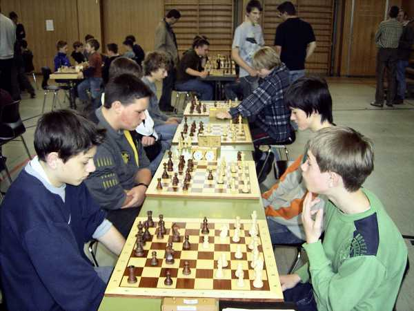
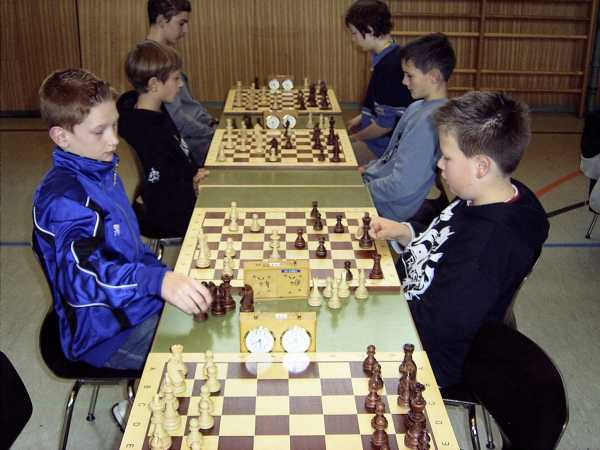
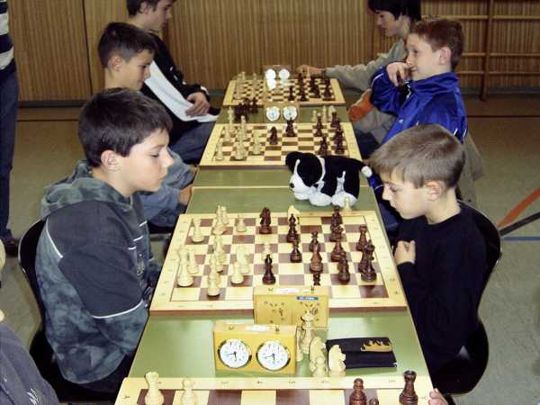

Ein seltener Anblick: Der SC Laufenburg ist die erste Mannschaft, die eintrifft...
(ich hatte den Starttermin um eine halbe Stunde nach vorne "verlegt")

Kurz mal warm machen am Brett.

Und schon geht's los. Die U14-Gruppe war stark besetzt.

Auch in der U12 konnte Lukas trotz anfänglicher Erfolge keinen Blumentopf gewinnen.

Rafael haderte ebenfalls mit seinem Schicksal.

Daniel gegen den späteren Turniergesamtsieger der U10.

Turnieratmosphäre.

Schnell noch die Trostpreise verstaut und dann wieder ab nach Hause...